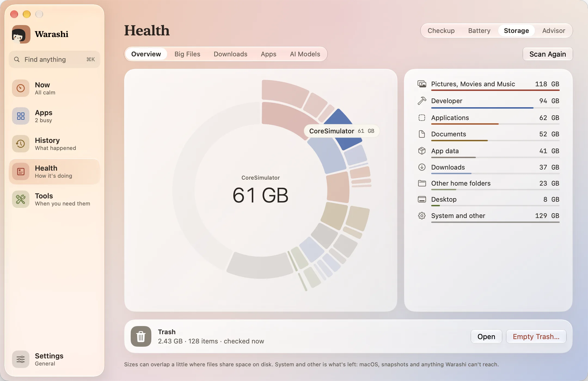

القرص الممتلئ يُبطئ الـ Mac ويمنع التحديثات. والخبر الجيد أن معظم المساحة تكون عادةً في عدد قليل من الأماكن. إليك كيف تجدها.
1. ابدأ بالصورة الكبيرة
افتح › إعدادات النظام › عام › التخزين. يعرض الشريط الملوّن قرصك بحسب الفئة، وتتيح لك القائمة تحته النظر داخل كل منها وإفراغ سلة المهملات.
2. تحقق من المشتبه بهم المعتادين
- التنزيلات وسلة المهملات. تتراكم المثبّتات القديمة وصور الأقراص بهدوء. والملفات في سلة المهملات تظل تشغل مساحة حتى تُفرَّغ.
- الصور والموسيقى والفيديو. قد تبلغ مكتبة محفوظة بالكامل على الـ Mac مئات الغيغابايت. أما «تحسين مساحة تخزين Mac» في iCloud فيُبقي على الـ Mac نسخًا أصغر.
- النسخ الاحتياطية لـ iPhone وiPad. قد تكون نسخ الأجهزة القديمة كبيرة جدًا. أدِرها في Finder، ضمن «إدارة النسخ الاحتياطية» لجهازك.
- أدوات المطوّر. قد تصل بيانات Xcode المشتقة والأرشيفات والمحاكيات إلى عشرات الغيغابايت، وكذلك صور Docker والأجهزة الافتراضية.
3. ما هي «بيانات النظام»؟
هو كل ما لا يندرج تحت فئة أخرى: ذاكرات مؤقتة، وسجلات، ولقطات Time Machine المحلية وغيرها. وكثير منه مؤقت يمسحه macOS حين يحتاج إلى المساحة، فقد يبدو مقلقًا دون أن يكون مشكلة.
4. كم مساحة فارغة تحتاج؟
يحتاج macOS إلى مساحة للمبادلة والتحديثات والذاكرات المؤقتة. وتحت نحو 10–15% حرة، تبدأ الأمور بالبطء. وإن كنت قريبًا من هذا الخط كثيرًا، فانظر هل أرقّي جهاز Mac؟
5. احذر عند الحذف
التزم بالملفات التي تعرفها. حذف أشياء عشوائيًا من مجلد Library قد يعطّل التطبيقات أو يفقدك بياناتها، والذاكرات المؤقتة التي تمسحها يدويًا تعود عادةً من جديد.


